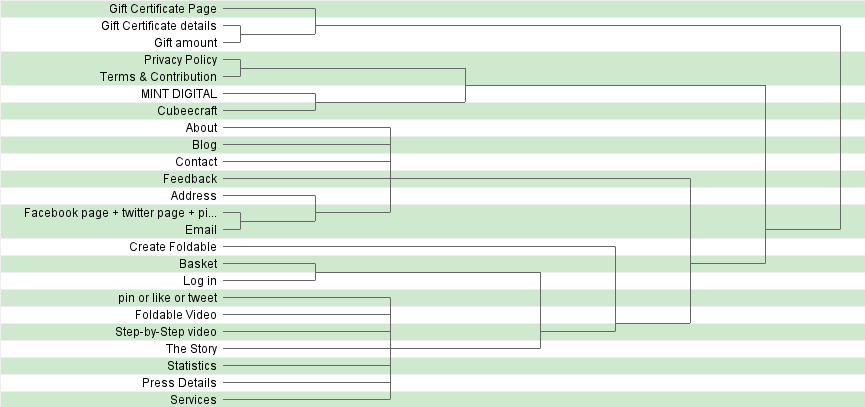

The Study
This is the Card Sorting technique applied to the content of Foldable.me website. The website does have a decent distribution, but it could be better.
Categories
The Study was done by 4 people including me, Because this was my first study and I was a bit confused it didn't turn out very well. I used the Open Card Sorting teqniquies butI should have used The Closed teqnique better.The results show a huge specterum of opinions. Because it was done by only 4 people, the names of the content is not very acurate (or misunderstood by the volunteer), the results were not very helpful. The largest agreement was on the Gift Certifcates category with 81%. While the second largest agreement was on the Contact category with 72%. Other highly agreed on categoris are Home, Main menu and About.
Tree graph
.png)
The Tree graph is probably the most helpful way of reading the data from the participants, I included the final result on top and another diagram with less categories which could actually be helpful (Please open the image inorder to see it).The first tree has 21 categories which is not applicable while the second one contains 6 categories. In the second tree you could see that the participants agreed on few things such as part of the actual footer (the refrence to the companies and the policies), and the Gift Certificates, and got close results to the real About and Contact page.
Categories X Items

I feel that this classification provides the same information like the Categories summary but in more details. It was not very helpful to me because it wasn't closed. I feel like the closed is better when you don't have a lot of people, but you can use open when you have enough number (between 12-17 people)
Items X Items
I have the same opinion about this like the previous part. This part lays out the tree graph in more details.
Conclusion
In Conclusion, The study could have been more helpful if it was a closed study. On the other hard, even though the study had only 4 participants the tree diagrams was insighful.